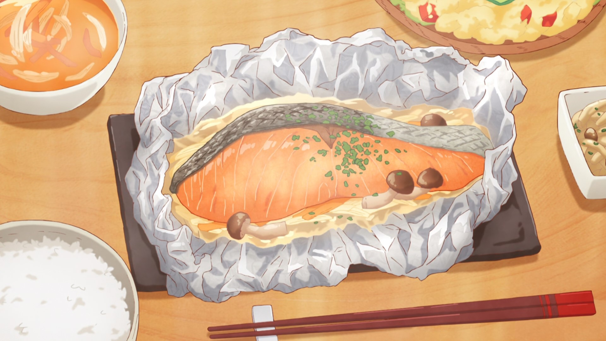

Salmon and Buttery Mushrooms in Foil

Description
A cheap and tasty dish, this recipe appears in the popular manga Today's Menu for the Emiya Family.
Ever had a Celtic hero invite himself over for dinner, when you're already over the dinner budget? With this recipe, you
shouldn't have anything to worry about!
Ingredients - Serves 4
- 4 fillets, raw salmon
- 1 onion
- 1/2 bunch shimeji mushrooms
- 1/2 carrot
- Sprinkle parsley (seasoning)
- Salt and pepper to taste
- 1/2 cube bouillon
- Butter to taste
Steps
-
Pour a small amount of sake on raw salmon and sprinkle a bit of salt on both sides. Let sit for 5-10 minutes.
(The salt
is to remove any raw fish smell.) Once moisture is drawn from the fillets, wipe them down with paper towels.
-
Thinly slice onions and carrots. Separate shimeji mushrooms into bite-size pieces, and mince parsley.
-
Season raw salmon with salt and pepper. Finely crush the bouillon cube.
-
Spread sheets of aluminum foil. Make a bed with the onions and carrots, then sprinkle some of the crushed
bouillon onto
them. Place the salmon and shimeji on top, then fnially add 5-10 grams (1-2 tsp) of butter before wrapping it
all in
foil. (Make sure that the salmon skin doesn't touch the vegetables. If it does, the vegetables will end up
smelling a
bit like the skin.)
-
Place the foil packets from (4) onto a frying pan, then steam over low heat for about 15-20 minutes. (If you're
worried about the packets sticking to the frying pan, pour a little water in it when steaming.)
-
After confirming that the fish is fully cooked, sprinkle parsley on top. All done!
Recipe Source: Today's Menu for the Emiya Family volume 1, chapter 2.
Return to top